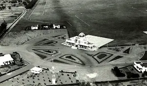

Military Aviation
Military aviation in Mozambique is closely tied to the country’s struggle for independence, the long civil war, and later efforts at national reconstruction. It evolved from a guerrilla-style air capability in the 1960s–70s to a small conventional air force in the 1980s–90s, and today remains a limited but still active force focused on sovereignty and internal security.
Before Independence (1960s–1974)
Mozambique was under Portuguese rule, and FRELIMO, the independence movement, had no air power of its own in the early years. All aviation was controlled by Portugal, and guerrilla forces operated entirely on the ground. Late in the independence struggle (early 1970s), friendly countries — especially the Soviet Union and some African allies — began training FRELIMO personnel in aviation support roles. This laid the groundwork for what would become the Mozambican Air Force.
Birth of the Mozambican People’s Air Force: FAPM (1975)
When Mozambique became independent on 25 June 1975, the new state created its air arm: FAPM – Força Aérea Popular de Moçambique Its first aircraft were Soviet-made, reflecting Cold War alignments.
Early inventory included:
- An-2 transport biplanes
- Mi-8 helicopters
- MiG-17 fighters (retired early)
- An-26 and An-24 transports
- Let-410 light transports
- MiG-21 fighters (arrived late 1970s/early 1980s)
The force benefited heavily from: Soviet training Military aid from East Germany and Cuba Dozens of Mozambican pilots trained abroad (USSR, Czechoslovakia, Bulgaria)
The Mozambican Civil War (1977–1992)
The civil war between the government and RENAMO greatly shaped military aviation. Primary roles of the Air Force during the war: Troop transport, Supply flights to remote garrisons, Helicopter support and medevac, Reconnaissance, Occasional light strike missions, Key aircraft at the time, An-26 and An-24 for logistics, Mi-8 and Mi-17 helicopters (workhorses of the war), MiG-21 fighters (limited use due to cost, maintenance, and training complexity), Ilyushin Il-14 and Il-18 (rare, used mainly for VIP and cargo),
Many aircraft operated from:
- Maputo
- Beira
- Nacala
- Chimoio
- Quelimane
- Tete
Post-war Decline (1992–2010)
After the 1992 Rome Peace Agreement, Mozambique sharply reduced defense spending. Consequences for the Air Force:
Many aircraft grounded
MiG-21 fighter fleet fell out of service by the late 1990s. Transport aircraft were stored or cannibalized for parts. Maintenance crisis Old Soviet-era equipment could not be supported due to:Modernization and Current Status (2010–present)
From the early 2010s, Mozambique attempted to rebuild its air capability, though on a small scale.
New acquisitions and upgrades
Mi-17 helicopter overhaul programs Acquisition of Y12 (Harbin) light transports from China Cessna and small aircraft for training Possible limited modernization of An-26 fleet